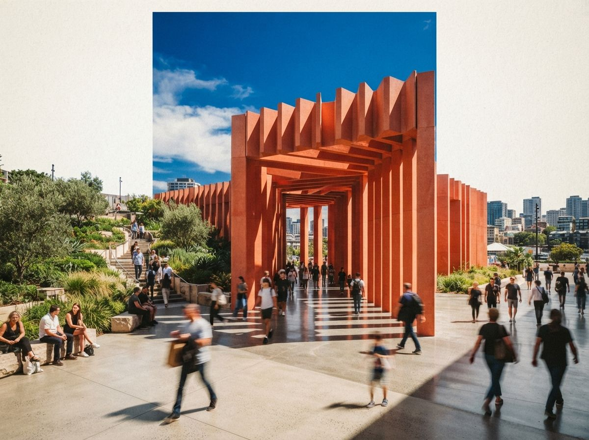
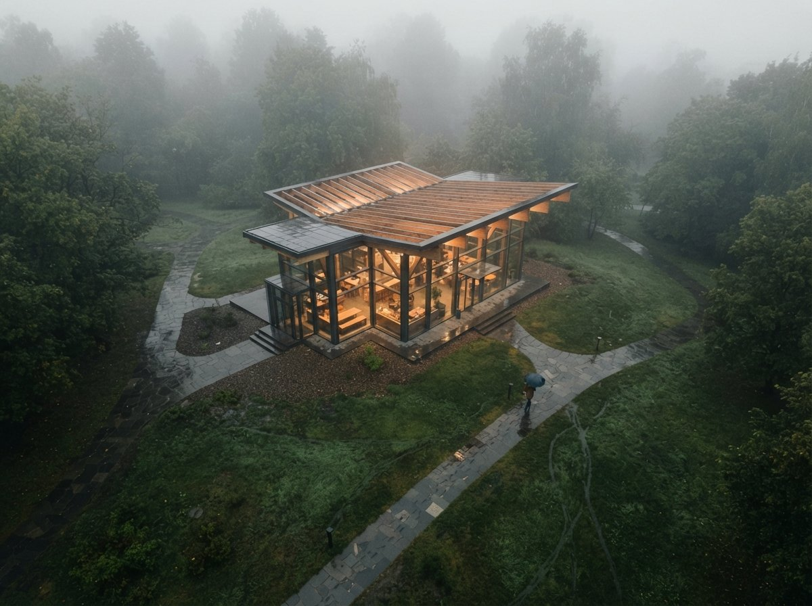

First, the honest read of what Chaos is saying. The company describes 4.4 and 4.5 as a pair of releases that together make the visualization workflow smoother, with a set of practical additions on top of the engine architects already know. Veras still runs on the Nano Banana 2 image engine, still reads your model geometry rather than repainting a flat screenshot, and still bills on a credit model with an entry annual plan around 29 dollars a month. If you want the full feature accounting, we kept it separate in our 4.5 features write-up, and the release history in which Veras version shipped image to video. This piece is only about the decision.
What the vendor is telling you by accident
Notice the shape of the announcement. It does not lead with one headline capability the way 4.0 did, when the whole pitch was a new rendering engine. It describes two releases as a single story about smoothness. That framing is a tell, and a useful one. When a vendor bundles a point release with the one before it and sells the pair on "even smoother," it is quietly telling you there is no single feature in here urgent enough to carry its own post. That is not a criticism of the work. Steady, unflashy refinement is exactly what a mature plugin should be doing. It just means the honest headline is "nicer, not necessary," and the marketing cannot say that out loud.
So take the smoothness claim at face value and then act on what it implies. Smoother is a reason to upgrade eventually. It is not a reason to upgrade on a Tuesday in the middle of a set of client plates.

A plugin upgrade is not an app upgrade
Here is the part the "worth it" framing skips. When a web tool updates, you get the new version whether you asked or not, and the old one is gone. There is nothing to time and nothing to roll back. A plugin is the opposite. It is pinned to a host application version, it carries its own settings and cache, and it is sitting inside a project whose look you may need to reproduce next week. Every one of those is a place a mid-project update can bite you.
The risks are small and real. A new engine build can shift how a prompt resolves, so the render you approved on Monday comes back subtly different on Friday. A host application you have not updated in months may not love the newest plugin build. Credits spent chasing a look you already had are credits gone. None of this is likely. All of it is avoidable by choosing when the change happens instead of letting a notification choose for you.
The question is never whether the new version is better. It is whether better is worth a variable you did not need this week.
When to upgrade now
There are clean windows where you should just do it, and today might be one of them.
- You are between projects. Nothing live depends on reproducing an exact result. This is the obvious moment, and it is worth actively creating if your calendar allows.
- You are starting a fresh scene. A new project has no approved look to protect, so it inherits the newest build with zero downside.
- You just moved machines or seats. You are reinstalling anyway. Install current.
- Your team syncs versions. If two people share a file and render it, they should share a Veras build too. Upgrade together, on a chosen day, not one at a time by accident.
When to wait
And the windows where the smart move is to sit on 4.4 a little longer.
- You are mid-deliverable. Plates are approved, the client is reviewing, revisions are still coming. Do not introduce a rendering variable into a look someone already signed off.
- You depend on reproducing a result. If your process relies on rerunning a saved prompt and getting the same frame, freeze the build until the batch is closed.
- Your host app is behind. If your Revit or SketchUp is a version or two back, check compatibility before, not after, the update.
- Credits are tight this month. Re-establishing a look on a new build costs renders. If your quota is already committed, that is a reason to wait for the reset.
| Your situation | Move | Why |
|---|---|---|
| Between projects, quiet week | Upgrade now | No approved look to protect |
| Starting a brand new scene | Upgrade now | Nothing to reproduce, all upside |
| Mid-deliverable, client reviewing | Wait | Do not add a variable to a signed-off look |
| Team sharing one file | Upgrade together | Matched builds, one chosen day |
| Host app two versions behind | Check first | Compatibility before commitment |
| Happy with 4.4, no pain | Skip for now | Smoother is not a problem you have |

The ten-minute test before it touches paid work
If you do upgrade, spend ten minutes proving the new build before you let it near a client deliverable. Pick one scene you know cold, ideally a project you already rendered and approved on 4.4. Note the exact prompt and, if you keep one, the seed. Run it again on 4.5 with everything else held constant, and put the two frames side by side.
You are checking three things, in this order. Does the geometry still hold, meaning the building the model describes is the building in the image, with no invented mullions or drifted rooflines. Does material scale read the same, so brick is still brick at the right size and not a texture that grew or shrank. Does the light land where it did, because a new engine build can warm or cool a scene by a step without telling you. If all three match, trust it and move on. If one drifts, you now know the delta before a client finds it for you, which is the entire point of testing on a scene you have already signed off rather than on live work.
Our take
Read the announcement again and the recommendation writes itself. Chaos is not claiming 4.5 fixes something broken in 4.4. It is claiming the workflow got smoother, and a review is asking whether smoother is worth the click. It is, on your schedule. It is not, on a deadline. The one genuinely wrong move is to treat a plugin notification like an emergency and update a live project because a badge appeared, then spend an afternoon confirming your approved renders still look the way the client approved them.
If you are curious, install 4.5 on the next quiet day, render a scene you know well, and compare it against a 4.4 frame before you trust it on paid work. If you are busy and 4.4 is doing its job, close the notification and keep building. A point release that gets sold on smoothness is telling you the truth: there is no fire. Upgrade like there is no fire.
Written from the 25 July 2026 intel sweep, which surfaced a Chaos post covering what is new across Veras 4.4 and 4.5 alongside a review video asking whether 4.5 is worth upgrading. Feature and pricing details are as described by Chaos; we have not re-benchmarked the 4.4 to 4.5 change. ArchiGen AI carries no sponsored placements, including from Chaos.